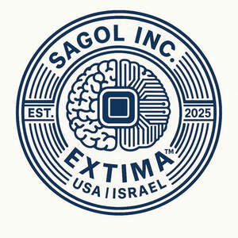

Trade Mark Journal No.2025/029 18 July 2025
UK00004232789 11 July 2025 (9,10,42,44)

- Class 9
- Wearable computers; Wearable smartphones; Wearable computer hardware; Wearable computer peripherals; Wearable communications devices in the form of wristwatches; Wearable computer peripheral devices; Wearable digital electronic communication devices; Wearable telecommunication apparatus; Downloadable mobile applications for use with wearable computer devices; Wearable monitors; Wearable speakers; Wearable communications apparatus; Wearable displays; Computer application software for use with wearable computer devices; Wearable digital electronic devices capable of providing access to the Internet; Computer hardware modules for use in Internet of Things electronic devices; Peripherals adapted for use with computers and other smart devices; Software related to handheld digital electronic devices; Watchbands that communicate data to other electronic devices; Wristband computer devices; Digital sensory devices; Electronic sensors; Handheld computing devices; Wearable activity trackers; Wearable video display monitors; Wrist-mounted smartphones; Electronic personal alarm devices; Electronic anti theft devices; Telecommunications devices; Semiconductor devices; Microchips [computer hardware]; Electronic memory devices; Computer hardware modules for use with the Internet of Things [IoT]; Telecommunication devices and apparatus; Input devices for computers; Augmented reality software for use in mobile devices for integrating electronic data with real world environments; Downloadable electronic game software for wireless devices; Electronic game software for mobile phones; Data processing equipment and accessories (electrical and mechanical); Computer software for mobile phones; Mobile computers; Electrical and electronic components; Information storage devices [electric or electronic]; Software and applications for mobile devices; Electronic chips for the manufacturer of integrated circuits; Electrical and electronic instruments for storing data; Software applications for use with mobile devices; Software applications for mobile devices; Silicon chips [electronic components]; Remote controls for mobile electronic devices; Application software for wireless devices; Electrical telecommunications instruments; Handheld communication devices; Electronic communication equipment and instruments; Electrical sensors; Augmented reality software for use in mobile devices; Wireless communication devices; Computer software for cellular phones.
- Class 10
- Wearable monitors used to measure biometric data for medical use; Sensor apparatus for medical use in diagnosis; Ultrasonic sensors for medical use; Diagnostic ultrasound apparatus for medical use; Diagnostic imaging apparatus for medical use; Ultrasonic medical diagnostic apparatus; Sensor apparatus for medical use in monitoring the vital signs of patients; Diagnostic measuring apparatus for medical use; Measuring devices for medical use; Temperature sensors for medical use; Physiological monitoring apparatus for medical use; Oxygen sensors for medical use; Diagnostic ultrasound instruments for medical use; Probes connected to microprocessing apparatus for medical diagnosis; Ultrasonic diagnostic instruments for medical use; Electronic temperature monitors for medical use; Temperature sensing apparatus for medical use; Telemetry devices for medical applications; Patient monitoring sensors and alarms; Medical devices; Medical apparatus and devices; Respiration monitors for medical use; Ultrasonic apparatus for medical use in diagnosis; Telemetry apparatus for medical use; Precision sensors for medical use; Apparatus for blood monitoring [for medical use]; Oxygen monitors for medical use; Physiological measuring apparatus for medical use; Ultrasonic apparatus for medical use in scanning the body; Electronic heart signal monitors [for medical use]; Temperature monitors for medical use; Medical imaging apparatus; Diagnostic, examination, and monitoring equipment; Medical diagnostic instruments; Electronic monitoring instruments for medical use; Ultrasonic probes for medical use; Electrocardiograph monitoring apparatus; Medical diagnostic apparatus for medical purposes; Bioresonance pulse device; Physiological apparatus for medical use; Scanning apparatus for medical use; Test electrodes for medical use; Testing probes for medical diagnostic purposes; Tools for medical diagnostics; Diagnostic apparatus for medical purposes used in medical laboratories; Electronic blood pressure monitors [for medical use]; Respiratory monitors [medical]; Electronic blood oxygen saturation monitors [for medical use]; Diagnostic apparatus for medical purposes; X-ray diagnostic apparatus; Electrodes for use with medical apparatus; Magnetic treatment apparatus for medical use; Pressure monitors for medical use; Electronic heart rate monitors [for medical use]; Probes for use with integrated circuits [for medical diagnosis]; Dynamic tomography apparatus for medical use; Wearable walking assistive robots for medical purposes; Detecting instruments for medical use; Electronic thermometers for medical use; Scanners for medical diagnosis.
- Class 42
- Services for the design of electronic data processing software; Software engineering services for data processing; Computer programming services for electronic data security; Software engineering services for data processing programs; Rental of computer software, data processing equipment and computer peripheral devices; Computer services for the analysis of data; Computer programming services for data processing; Design and development of operating software for cloud computing networks; Design and development of computer software for use with medical technology; Programming of computer software for evaluation and calculation of data; Computer programming for data processing and communication systems; Computer services concerning electronic data storage; Providing user authentication services using biometric hardware and software technology for e-commerce transactions; Calibration services relating to computer software; Maintenance of data processing software; Design and development of operating software for accessing and using a cloud computing network; Development and testing of computing methods, algorithms and software; Software as a service [SaaS] services featuring software for machine learning, deep learning and deep neural networks; Design services for data processing systems; Design and development of data processing software; Providing information about the design and development of computer software, systems and networks; Software as a service [SaaS] featuring computer software platforms for artificial intelligence; Testing of electronic data processing systems; Design and development of computer software for evaluation and calculation of data; Services for the design of computer software; Engineering services relating to data processing technology; Computer software design services; Development services relating to computer software application solutions; Design and development of electronic data security systems; Computer software programming services; Rental of software for data processing; Programming of operating software for accessing and using a cloud computing network; Cloud storage services for electronic data; Design and development of data retrieval software; Advisory services relating to man-machine interfaces for computer software; Software as a service [SaaS] featuring software for deep neural networks; Computer software advisory services; Design of computer machine and computer software for commercial analysis and reporting; Computer software consulting services; Leasing of computer software for reading a data stream; Consulting in the field of cloud computing networks and applications; Services for updating computer software; Computer software technical support services; Computer programming for data processing; Computer software integration; Consultancy and information services in the field of computer system integration; Computer analysis services; Development of computer software application solutions; Providing information in the field of computer software development; Computer and information technology consultancy services; Design and development of computer software for reading, transmitting and organising data; Design services relating to data processing systems; Design services relating to computer software; Services for the writing of computer software; Providing computer facilities for the electronic storage of digital data; Design and development of operating software for computer networks and servers; Updating of software for data processing; Providing artificial intelligence computer programs on data networks; Computer and software consultancy services; Services for maintenance of computer software; Development of systems for the processing of data; Computer systems integration services; Design services relating to data processing test tools; Advisory and information services relating to computer software; Computer software research; Providing information in the field of computer software design; Development of computer database software.
- Class 44
- Medical diagnostic services; Medical imaging services; Medical services; Medical evaluation services; Medical health assessment services; Medical analysis services; Medical care services; Medical treatment services; Medical and healthcare services; Provision of medical services; Health care consultancy services [medical]; Services for the provision of medical care information; Health clinic services [medical]; Medical care and analysis services relating to patient treatment; Medical clinic services; Clinic (Medical -) services; Clinic services (Medical -); Surgical diagnostic services; Medical analysis services relating to the treatment of patients; Medical tele-reporting [medical services]; Medical counseling services; Medical assistance services; Medical counselling services; Medical information services; Medical nursing services; Nursing services (Medical -); Medical analysis services for diagnostic and treatment purposes provided by medical laboratories; Ultrasound services for medical purposes; Services for the provision of medical facilities; Advisory services relating to medical services; Medical consultancy services; Remote monitoring of medical data for medical diagnosis and treatment; Medical advisory services; Residential medical treatment services; Tele-reporting (medical services); Medical analysis services for the diagnosis of cancer; Health resort services [medical]; Technical consultancy services relating to medical health; Mobile medical clinic services; Health farm services [medical]; Medical spa services; Telemedicine services; Healthcare services; Medical testing services relating to the diagnosis and treatment of disease; Health clinic services; Emergency assistance services in the medical field; Health assessment services; Medical services in the field of diabetes; Dietetic counselling services [medical]; Medical analysis services relating to the treatment of persons; Medical analysis services relating to the treatment of persons provided by a medical laboratory; Medical services for treatment of the skin; Provision of health care services; Medical testing services, namely, fitness evaluation; Providing medical support in the monitoring of patients receiving medical treatments; Medical screening services in the field of asthma; Medical information retrieval services; Medical services in the field of oncology; Medical treatment services provided by a health spa; Consulting services relating to health care; Surgical treatment services; Health screening services; Medical screening services relating to cardiovascular disease; Individual medical counseling services provided to patients; Healthcare information services; Charitable services, namely providing medical services; Consultancy services relating to health care; Residential medical advice services; Psychological diagnosis services; Personality assessment services [mental health services]; Advisory services relating to health care; Medical services in the field of nephrology; Medical treatment services provided by clinics and hospitals; Psychiatric services; Health-care services; Physician services; Services for the preparation of medical reports; Advisory services relating to medical instruments; Medical services for the diagnosis of conditions of the human body; Mobile dental care services; Respite care services in the nature of nursing aid services; Provision of medical treatment; Rental of medical and health care equipment; Consultancy and information services relating to medical products; Advisory services relating to medical problems; Mental health screening services; Medical services relating to the removal, treatment and processing of human blood; Medical laboratory services for the analysis of samples taken from patients; Healthcare advisory services; Medical analysis services for cancer diagnosis and prognosis; Medical services for the treatment of conditions of the human body; Audiological testing services; Advisory services relating to medical apparatus and instruments; Medical evaluation services for patients receiving rehabilitation for purposes of guiding treatment and assessing effectiveness; Hospital services; Obstetric services; Information services relating to health care; Medical testing for diagnostic or treatment purposes; Human healthcare services; Nursing care services; Providing online medical record services other than dentistry; Healthcare consultancy services; Health screening services in the field of asthma; Health center services; Pathology services; Providing medical information in the healthcare sector; Medical services relating to the removal, treatment and processing of human cells; Paramedical services.
Vitalii Gavrylytsia